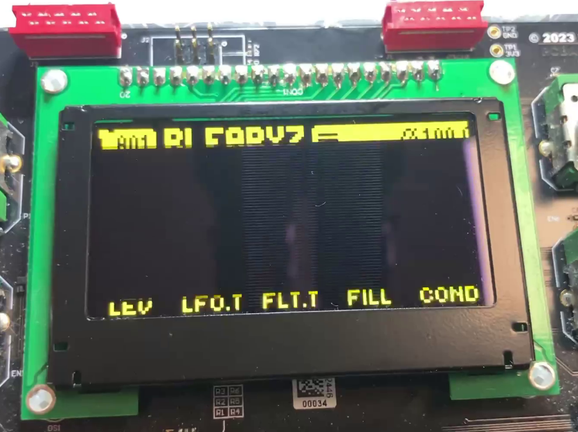

Если нужно заменить экран на Digitakt 1 или Digitakt 2, то следует знать следующую вещь: экраны от Digitakt 1 и Digitakt 2 не совместимы друг с другом. Они не взаимозаменяемые! Если установить желтый экран от Digitakt 1 на Digitakt 2, то хотя они и будут совместимы по пинам, желтый экран на Digitakt 2 будет работать некорректно: он будет сильно мерцать, по сути глазом будет видна строчная развертка, а так же отрисовка может сдвигаться на 2-3 пикселя, и эти пиксели переносятся на противоположную сторону экрана.
Известно только, что желтый экран от Digitakt 1 без проблем работает на Electron Syntakt (у Syntakt нет версии Syntakt 2, есть только первая и единственная), а так же на Electron Analog Heat 2 (он же Analog Heat MKII).
Геометрия
У Digitakt 1 и Digitakt 2 экран имеет 20 контактов на текстолите, к которому прикреплен дисплей. На следующем фото представлен желтый экран от Digitakt 1, который установлен на Digitakt 2 (видно, что дисплей не дает нормальную картинку):

Сама матрица заключена в черную железную рамку. От матрицы к текстолиту идет шлейф на 24 контакта.
Производитель
По всей видимости, поставщиком дисплеев является тайваньская компания WinStar: https://www.winstar.com.tw
Была информация, что дисплеи производятся еще и в Польше, но возможно там происходит только сборка матрицы и корпуса.
Модели
Для Digitakt 1, по всей видимости, использовались дисплеи с модулем CH1116 IC. Этот модуль производился до декабря 2023 года. Затем компания WinStar решила выпустить преемника этого модуля, который называется SH1106 IC.
Вот что на что заменяется:
Существующие vs. Новые модели IC Model Numbers
|
Related Module Series | |
|
Past model (CH1116) |
New model (SH1106) |
|
WEO012864AE |
WEO012864AH |
|
WEO012864AJ |
WEO012864AL |
|
WEO012864AK |
WEO012864AM |